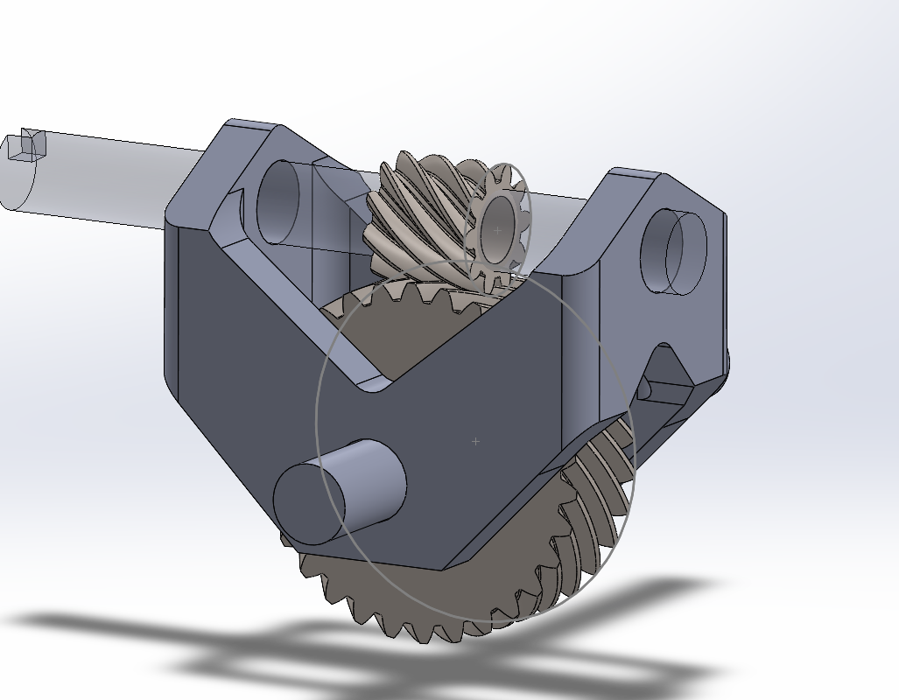
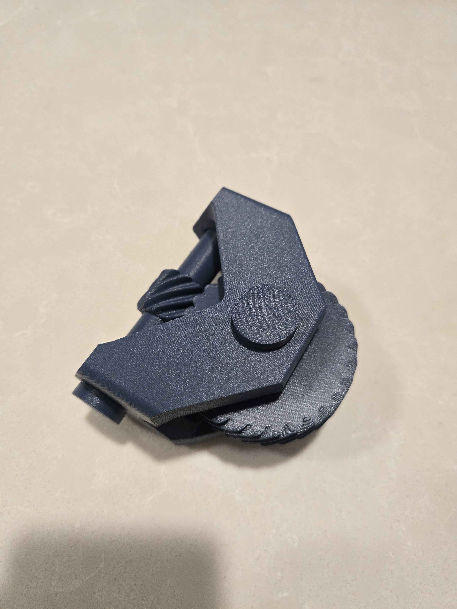
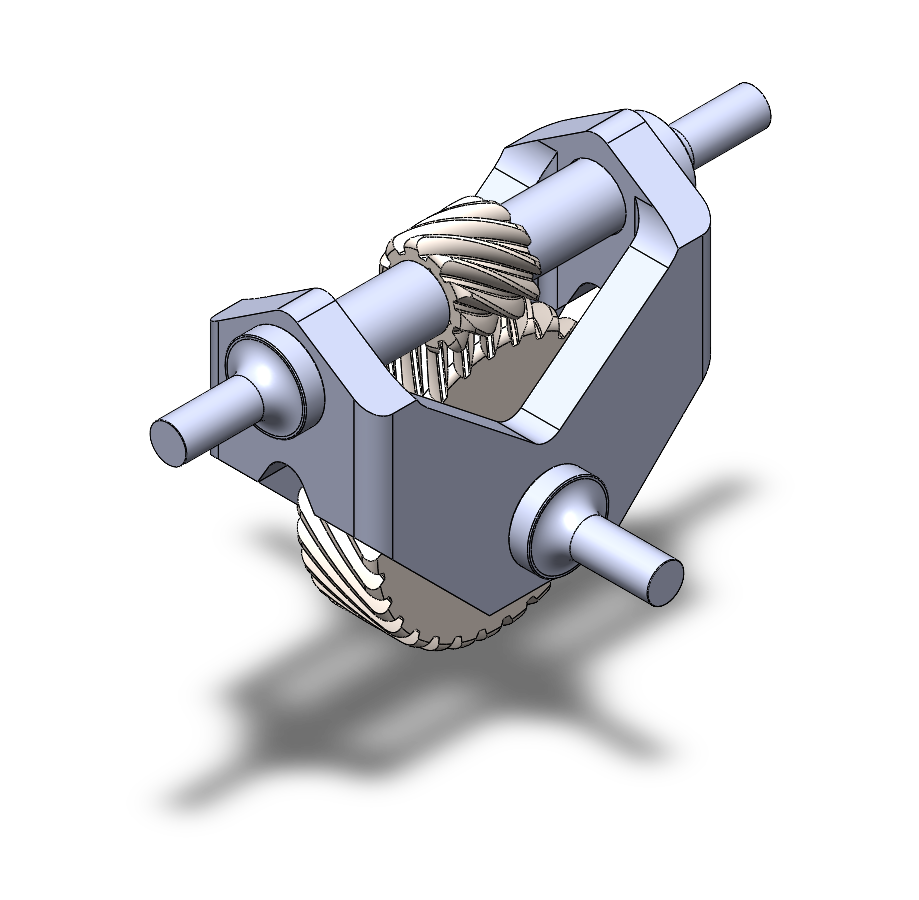
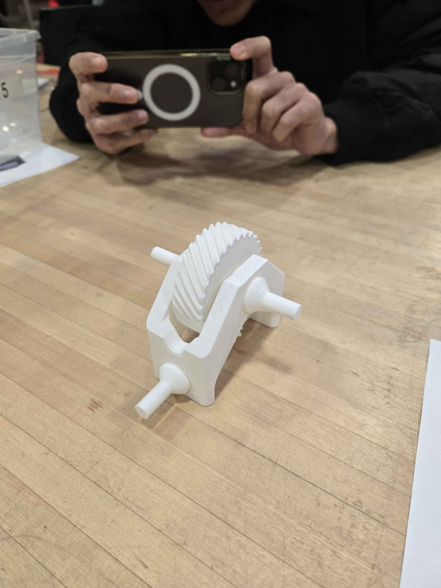

Project Overview

The 3D Printed Gearbox project involved designing, prototyping, and optimizing a gearbox for mechanical performance using additive manufacturing. This project prioritized simplicity, minimization of slop, and effective torque transmission. The final design used helical gears in a 3:1 ratio, offering a balance between efficiency and manufacturability while adhering to the constraints of 3D printing technologies available at MyFab.
Key Features
- Black Box Design Approach: Conceptualized using a Black Box method, transforming rotational input into rotational output with a 90-degree turn and 3:1 reduction.
- Helical Gear Design: Selected for ease of manufacturability and reduced slop compared to bevel or hypoid gears. Utilized gears with 30 and 10 teeth for a 3:1 ratio.
- Support-Free Additive Manufacturing: Designed all parts to be 3D printed without the need for support structures, ensuring optimal print quality and reduced material usage.
- Single-Piece Frame: Enhanced simplicity and rigidity with a dual V-shaped frame design that reduces print time and improves assembly.
- Custom Shaft Design: Two-part mirrored shaft with cylindrical contact points and square press-fit profiles minimizes slop while securing the gears.
- Minimized Backlash: Focused on a two-gear solution to reduce slop and simplify the system, valuing simplicity over maximum torque transmission.
Design Evolution
The gearbox design underwent three iterations to optimize for simplicity, printability, and performance:
- Initial Design (Mk0): Proof of concept using helical gears and a dovetail housing. Inefficient use of space and high print times demonstrated the need for improvement.
- Intermediate Design (Mk1): Introduced a single-piece frame and dual V-shaped design for support-free printing and improved rigidity.
- Final Design (Mk2): Implemented a two-part mirrored shaft, refined frame geometry, and improved assembly for optimal performance and manufacturability.
Gallery


